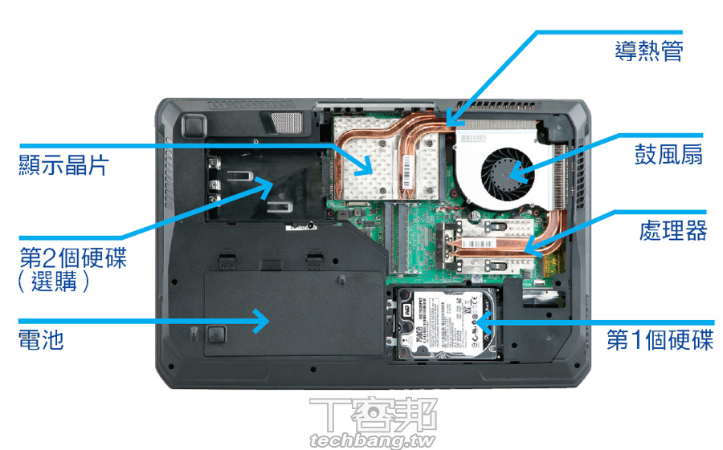

電腦簡介
電腦是利用數位電子技術，根據一系列指令指示並且自動執行任意算術或邏輯操作序列的裝置。通用電腦因有能遵循被稱為「程式」的一般操作集
的能力而使得它們能夠執行極其廣泛的任務。 電腦被用作各種工業和消費裝置的控制系統。這包括簡單的特定用途裝置（如微波爐和遙控器）、
工業裝置（如工業機器人和電腦輔助設計），及通用裝置（如個人電腦和智慧型手機之類的行動裝置）等。儘管電腦種類繁多，但根據圖靈機理論，
一部具有著基本功能的電腦，應當能夠完成任何其它電腦能做的事情。因此，理論上從智慧型手機到超級電腦都應該可以完成同樣的作業（不
考慮時間和儲存因素）。由於科技的飛速進步，下一代電腦總是在效能上能夠顯著地超過其前一代，這一現象有時被稱作「摩爾定律」。通過
網際網路，電腦互相連接，極大地提高了資訊交換速度，反過來推動了科技的發展。在21世紀的現在，電腦的應用已經涉及到方方面面，各行各
業了。
網站介紹
隨著科技的進步，現今的電腦已經不再像是以前的電腦一樣又貴效率又低， 而且因應市場需求， 現在的個人電腦可以因應自身的需求自由購買零件並組裝， 這也讓現在的個人電腦更多樣化。 本網站將會深入淺出一一的介紹個人電腦的各種組件、其功能、組裝方式以及性能介紹，非常適合想要組裝或研究電腦的學者。
分類
1. 主機板
2. 中央處理器
3. 記憶體
4. 處存裝置
5. 電源供應器
6. 顯示卡
7. 其他周邊
筆記型腦
由於筆記型電腦在出廠前就已經組裝好，將不適用於此網站內某些安裝教學，但概念大致相通。若無到處攜帶電腦的需求，本人是不推薦購買筆記型電腦，因為筆記型電腦散熱能力差，易損電腦零件壽命，並且在沒有其他周邊商品的購買需求下，筆記型電腦將會比個人電腦貴上一些。
